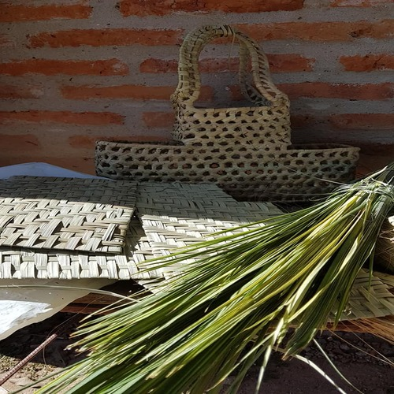
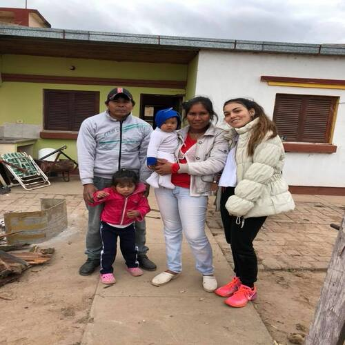
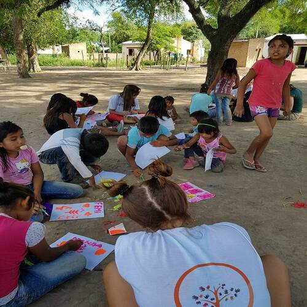

PARAJE "EL CANAL", Villa Rio Bermejito - Chaco
El Paraje "El Canal", como su nombre lo indica es un Paraje, ubicado en la localidad de Rio Bermejito, perteneciente a la provincia argentina del Chaco. Esta ubicaco a aproximadamente 320 kilometro de Resistencia, la capital de la provincia.
Algunos datos de la Comunidad:

El principal sustento económico de las familias proviene de la vente de artesanías que realizan las muejeres, y del trabajo de albañilería de los hombres.

En la comunidad conviven aproximadamente 80 familias, quienes se encuentran distribuídas en 20 casas, que no cumplen con los servicios básicos.

Solo el 10% de los niños y adolescentes finaliza los estudios secundarios. El 90% restante comienza a formar familia propia y trabajar antes de los 18 años.